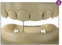
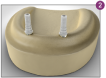
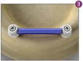
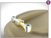
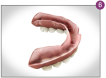
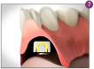
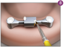
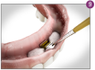
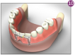

Análogos no modelo de gesso

Cilindros sobre os análogos

Corte da Barra (se necessário) e corte dos cilindros

Capa fundida e Barra parafusada sobre os análogos

Vista inferior do alívio realizado

Prova da prótese para verificar adaptação sem interferência

Proteção do Clip e dos parafusos para captura da Capa

Preenchimento dos espaços com resina

Vista do conjunto no interior da prótese